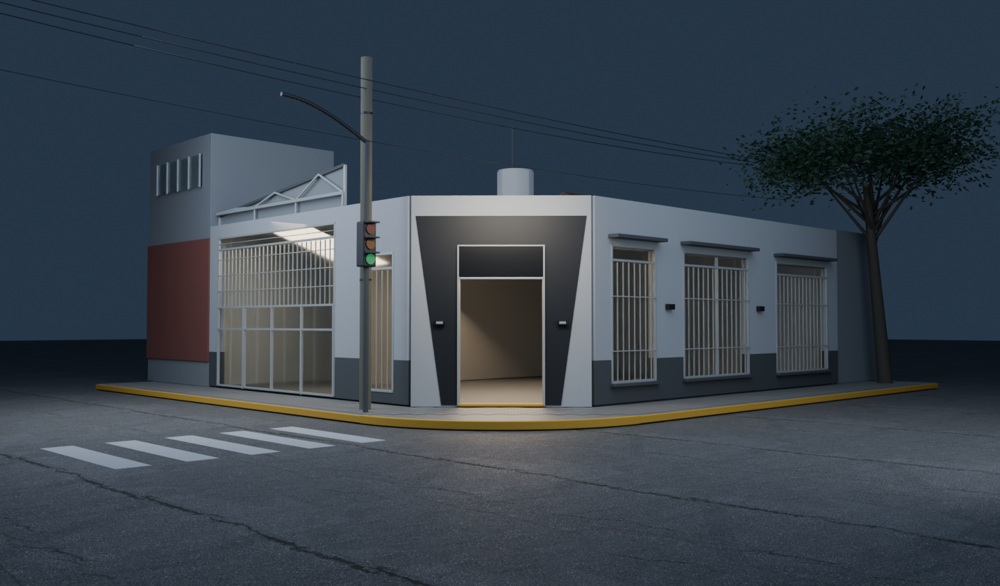
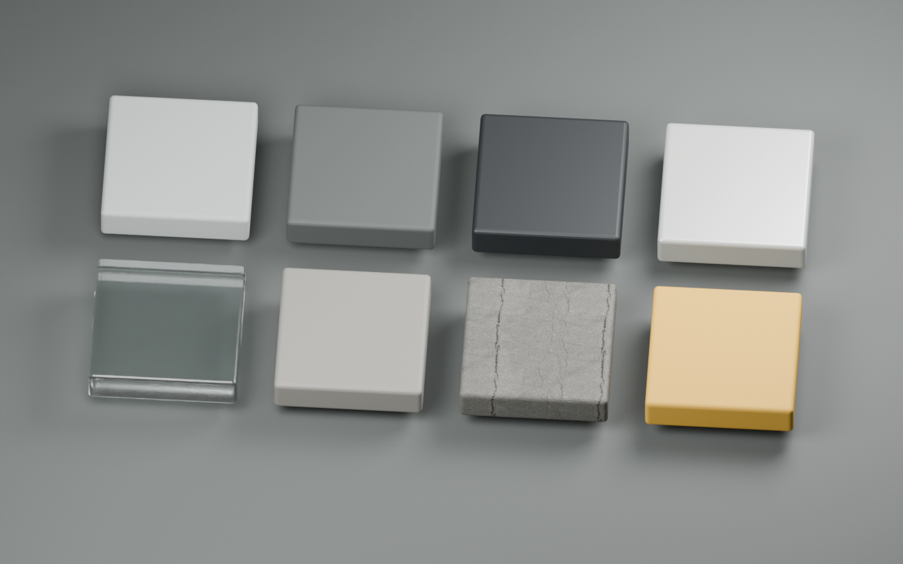

Producción en curso; todavía no es la escena final. Cartelería original pendiente. Puerta sin mecanismo confirmado. Interior y algunas medidas siguen siendo aproximados.
La prueba termina en el mismo frame 85 de la revisión anterior. No agrega espera ni permanencia adentro. Es un video renderizado en Blender; no hay Three.js ni integración con la web.
Frames para revisar

A · Inicial / frame 1Encuadre A aprobado. Panel del cartel preparado, sin logo inventado.
D y E son diagnósticos fuera del video. Muestran la continuación conservada: 12,5 cm antes del umbral y 20 cm adentro. No extienden los 3,54 segundos visibles.
F · Materiales bajo luz neutral

Fila superior: gris de fachada · zócalo carbón · negro de acceso · metal pintado.
Fila inferior: vidrio · concreto de vereda · asfalto · amarillo del cordón.
360 mallas y 22 materiales: todavía falta agrupar para reducir llamadas de dibujo. Memoria estimada de texturas: 106,3 MB en RGBA8 con mipmaps. Estos números no son una medición de un GLB ni de rendimiento web.
Lo que ya se puede evaluar
- Lectura de ambos frentes y la ochava negra actual.
- Contraste entre exterior frío e interior cálido.
- Vidrios, rejas, marcos, pavimento y acceso.
- Ritmo aprobado y acercamiento sin tiempo añadido.
Lo que falta para cerrar la imagen
- Cartel y logo originales; las superficies negras vacías son intencionales.
- Foto del interior desde el umbral. Los planos actuales todavía se ven demasiado vacíos.
- Medidas para calibrar proporciones y fotos cercanas para ajustar desgaste y materiales.
- Video y detalles del mecanismo de puerta antes de animarla.
Referencias concretas que necesito
| Material | Toma o formato | Qué permite resolver |
|---|
| Logo y carteles | SVG/PDF vectorial o PNG transparente; cartel fotografiado de frente y sin reflejos. | Identidad real, textos y proporciones. |
| Interior inmediato | Desde la entrada a 1,60 m, horizontal y lente 1×: frente, izquierda y derecha; incluir piso y techo de los primeros 3–5 m. | Reemplazar el interior esquemático sin construir un showroom completo. |
| Puerta | Frontal abierta/cerrada, jambas y video corto del movimiento completo. | Mecanismo y geometría animable correctos. |
| Medidas | Ancho y alto libres del acceso; ancho de ochava. Si es posible: longitud de frentes, altura y ancho de vereda. | Escala arquitectónica confiable. |
| Materiales reales | Fotos a 0,5–1 m de pared gris, zócalo, negro, metal y baldosa; luz difusa. | Grano, rugosidad y desgaste específico. |
| Parte superior | Una toma de cada frente a 8–12 m desde un lugar seguro, incluyendo estructura, cubierta y tanque. | Encuentros y alturas hoy estimados. |
Compatibilidad y límites de la entrega
Materiales compuestos por Principled BSDF, mapas de imagen y Normal Map. La variación de pintura fue horneada en Blender. La estructura PBR fue revisada; todavía no se verificó una exportación/importación glTF. El vidrio requiere comprobar transmisión en el motor web.
Las luces de área y los rebotes de Cycles necesitarán horneado o una recreación posterior para tiempo real. No se incorporaron librerías, UI, catálogo ni cambios en WordPress. El recorrido se comprobó contra sus 115 muestras originales; no hay colisiones en su línea central.